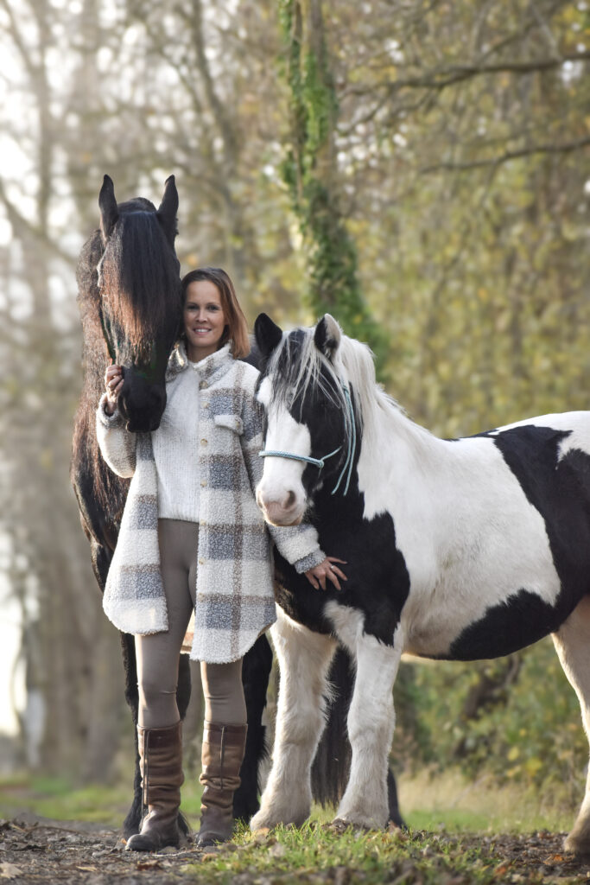

Over Ramona
Ik luister naar wat je vertelt. En naar wat er ondertussen gebeurt.
Ik begeleid volwassenen die na het overlijden van een dierbare merken dat niet alleen hun leven, maar ook zijzelf veranderd zijn. Mijn manier van werken is rustig, lichaamsgericht en ervaringsgericht.
Ik let op waar iets stokt. Wanneer je harder gaat praten of juist stiller wordt. Waar je spanning voelt. Wanneer je eigenlijk heel goed weet wat je nodig hebt, maar daar nog niet op vertrouwt.
Ik werk onder andere met paarden, omdat juist in de ervaring soms zichtbaar wordt wat met woorden moeilijk te bereiken is. Ik bepaal niet voor jou wat iets betekent — ik help je onderzoeken wat jij zelf merkt.
Je hoeft bij mij niet op een bepaalde manier te rouwen. Er is ruimte voor het gemis, voor alles wat ingewikkeld is en ook voor het leven dat ondertussen doorgaat.
- Mocht je ooit niet tevreden zijn, dan kun je terecht bij een onafhankelijke geschilleninstantie (GAT-klachtrecht en -tuchtrecht)
- Als CAT-therapeut val ik onder de wettelijke klachtregeling voor de zorg (GAT-Wkkgz)
- Begeleiding voor particulieren, groepen en organisaties
- Heldere afstemming vooraf via een gratis kennismaking

Ervaringen
Rust, veiligheid en vertrouwen komen steeds terug.
Ik denderde maar door, zonder echt te leven. Nu durf ik weer te voelen in plaats van steeds te vluchten.
Met steun van de paarden en de groep durfde ik weer te voelen wat er in mij leefde.
Ramona creëert een hele veilige omgeving samen met Ollie en Bob en neemt de tijd.
Aangesloten bij
Professionele bedding en duidelijke klachtenregeling.
Ik ben aangesloten bij verschillende beroeps- en kwaliteitsorganisaties. Mocht mijn begeleiding je ooit niet passend voelen, dan kun je terecht bij een onafhankelijke geschilleninstantie: als CAT-therapeut val ik onder GAT-Wkkgz klachtrecht en GAT-tuchtrecht bij Geschillen Alternatieve Therapeuten.
Eerste stap
Je hoeft je verhaal nog niet compleet te hebben.
Een paar zinnen over waar je nu tegenaan loopt zijn genoeg. Daarna kijken we samen rustig of een kennismaking of traject passend is.